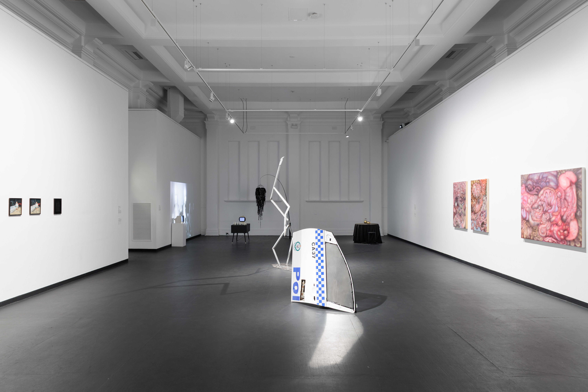
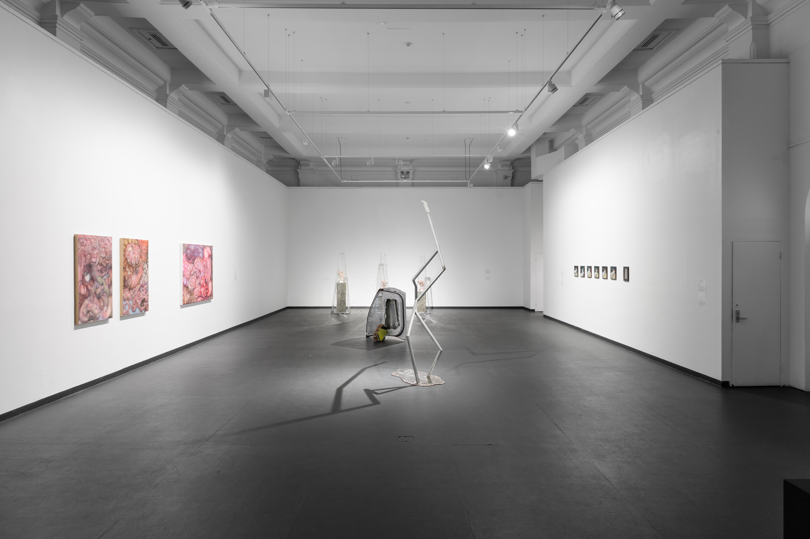
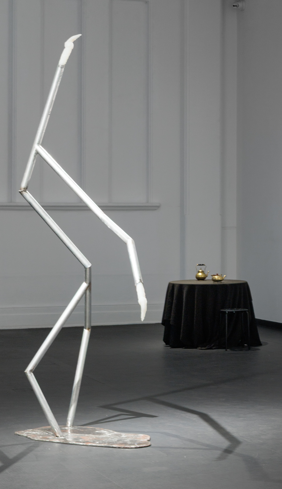
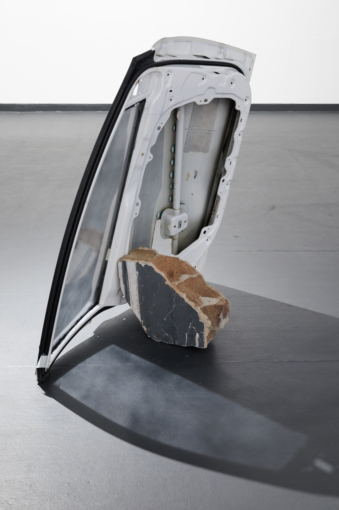

Pointing the finger, 2025.
Steel, silicone.
High beams, 2025.
Found object, acrylic, silver spray paint, sealant, debris.
Documentation by Guy Louden.
Exhibited as part of the 2025 Hatched: National Graduate Show at Perth Insitute of Contemporary Art.